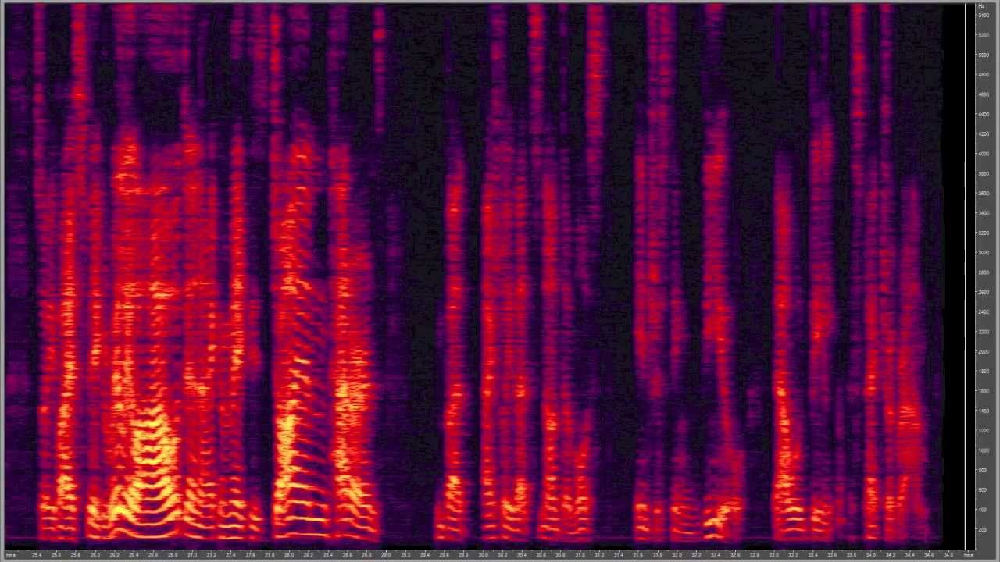

A spectrogram is a visual representation of a sound that is often used by engineers and researchers to analyse animal sounds or timbres of instruments.
A spectrogram represents a given sound in 3 dimensions. The horizontal axis represents time, the vertical axis represents frequency, and the third dimension represents the amplitude of a particular frequency at a particular time according to the intensity of colour of each point in the image.
This can be represented by a colour map, or by the opacity of the colour:
While frequency and amplitude is often used to describe a pure sound wave, a music’s character is often shaped by how these attributes change over time, or how these sine waves are played on top of each other.
These are usually dependent on the following features of a spectrogram:
ADSR Envelopes.
When a musical instrument is played, its amplitude is often not static. Instead, the loudness of the sound would build up and decay over time as a single note is played. This is referred to as an envelope and varies different from instrument to instrument, giving different instruments its specific character. An envelope can also be represented by graphically on an amplitude-time graph:
Harmonic Envelopes.
Compared to a single sine tone, instruments tend to sound richer due to the presence of harmonics. On the spectrogram, these show up as extra frequency bands that are multiples above the base frequency: